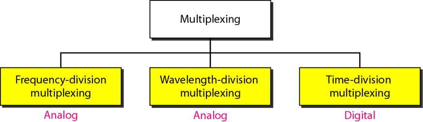
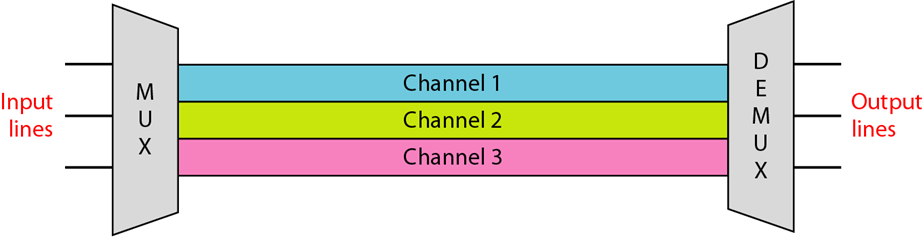
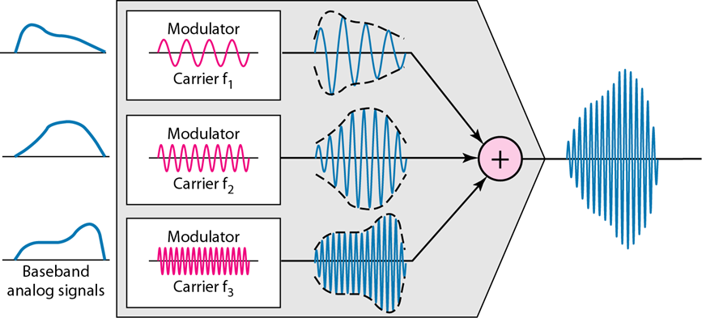
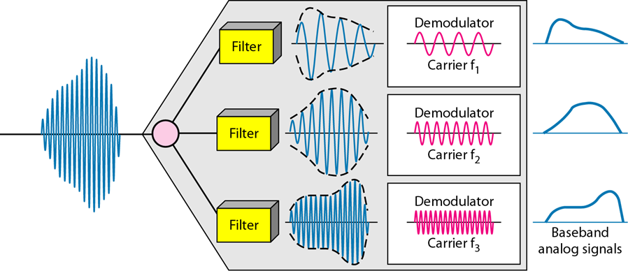
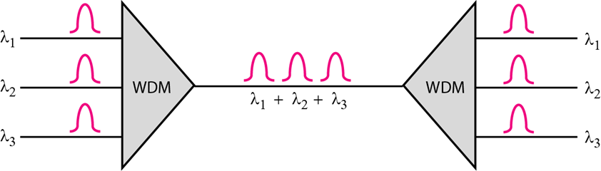
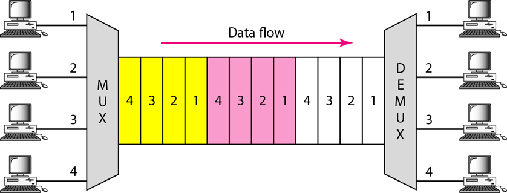
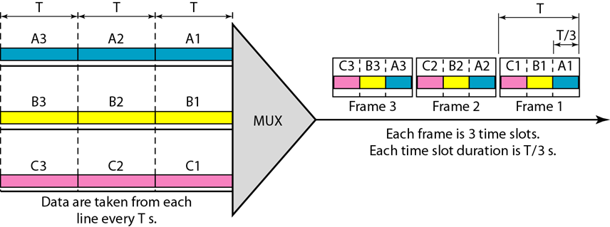
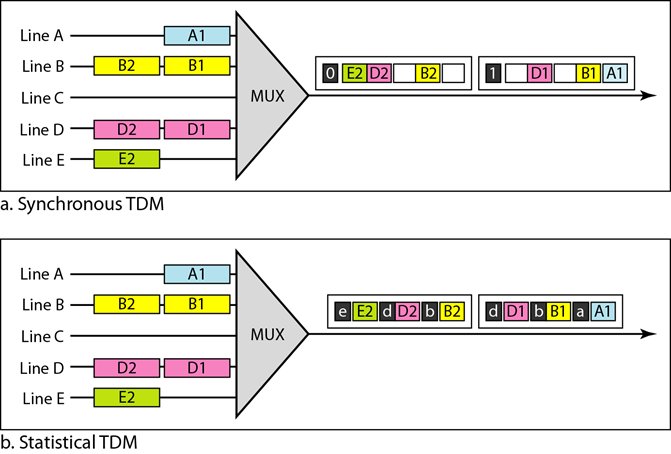
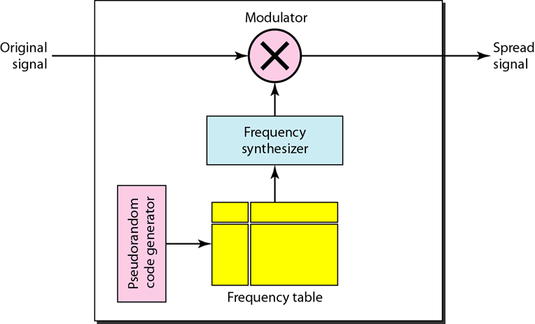
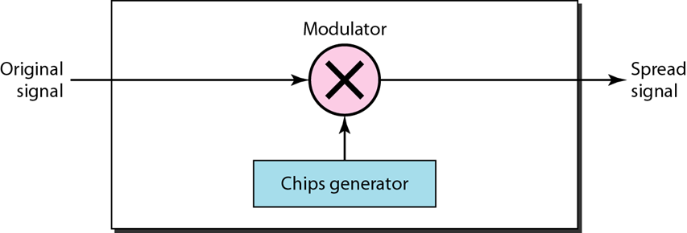

为达到特定目的，带宽利用是可用带宽的合理使用.
复用(multiplexing)可获得效率，
扩频(spreading)可以到保密与抗干扰
FDM、同步 TDM、统计 TDM 和 WDM 的概念
概念：
在链路带宽（以Hz为单位）大于要传输的信号的带宽之和时采用。
每个发送设备生成的信号用于调制不同的载波频率。调制后的信号再被合并为一个可以通过链路传输的复合信号。
载波频率之间的频率差必须能够容纳调制信号的带宽。
FDM是用来组合模拟信号的模拟多路复用技术。
复用过程：
分离过程：
用于具有高数据速率传输能力的光缆。
除了复用和多路分离包括通过光纤通道传输的光信号以外，波分复用在概念上与FDM相同。
都是将不同频率的不同信号合并。但其差别是这些频率非常髙。
概念示意图：
TDM是一个数字化的过程，它允许多个连接共享一条高带宽链路
TDM在时间上共享，每个连接占用链路的一个时间片段。
TDM将不同源端的数字数据合并到一个时间共享的链路上。
概念：
每个输入连接的数据流被划分为多个单元，其中每个输入占用一个输入时隙。
一个单元可以是一位，一个字符或一个数据块。
每个输入单元成为一个输出单元，占用一个输出时隙。
输入单元持续T秒，则每个时隙持续时间是T/n，而每个帧持续时间是T。
在同步TDM中, 链路速率是数据速率的 n 倍，并且比单元持续时间短 n 倍 .
概念：
同步和统计TDM的差别：
在统计TDM中，链路的容量通常小于每个通道容量之和。
线路的容量与DS-1到DS-4的数据速率是精确匹配的
T线路是为数字数据、音频或者视频设计的数字线路，也可以用于模拟传输，前提是要对模拟信号采样，然后使用TDM
用源信号调制M个不同的载波频率。
频率表使用这个模式查找频率作为跳周期的频率
在某一时刻用信号调制1个载波频率，在下一时刻信号调制另一个频率。虽然调制是一次使用一个频率，但在最终用了M个频率。
每个数据位用扩展编码的n位代替。
每一位被编码 为a个码片，此处码片的速率是数据比特率的a倍。
